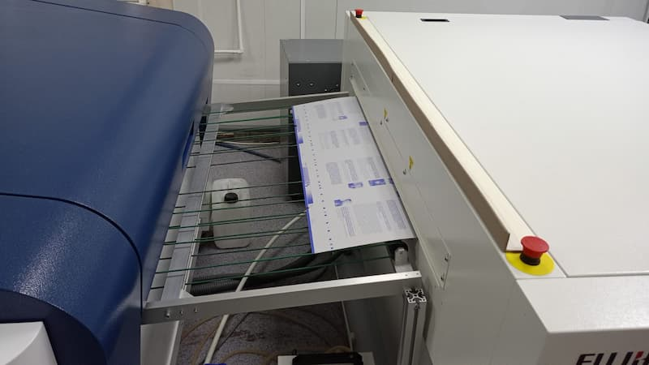
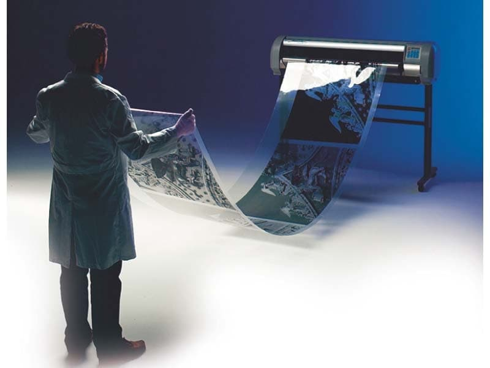

Давайте разберем отличия офсетных форм, полученных с использованием технологии CTP (Computer-to-Plate), от форм, созданных традиционным способом с применением пленок.

В технологии CTP изображение напрямую переносится с компьютера на печатную форму (пластину) при помощи лазера. Это исключает использование промежуточного этапа – фотовывода на пленку.

В этой технологии изображение сначала выводится на пленку с помощью фотонаборного автомата (фотовывода). Затем пленка накладывается на печатную форму, засвечивается ультрафиолетом, и после проявки на форме формируются печатающие и пробельные элементы.
| Характеристика | CTP (Computer-to-Plate) | Традиционная технология с пленками |
| Этапы процесса | 1. Создание макета на компьютере. 2. RIP (Raster Image Processor) – растрирование изображения. 3. Вывод изображения непосредственно на печатную форму с помощью лазера. 4. Проявка формы. | 1. Создание макета на компьютере. 2. RIP. 3. Вывод изображения на пленку. 4. Контакт пленок с печатной формой. 5. Засветка формы через пленку. 6. Проявка формы. |
| Качество изображения | * Высокое качество, четкость и детализация. * Более точная передача тонов и полутонов. * Меньше искажений и дефектов, связанных с неточностью совмещения пленок. | * Качество ниже из-за промежуточного этапа (пленка). * Возможны потери в детализации и четкости. * Вероятность появления дефектов, связанных с царапинами на пленке, пылью, неточным совмещением пленок и т.п. |
| Точность совмещения | * Идеальное совмещение цветов, так как изображение выводится непосредственно на форму, исключая человеческий фактор и погрешности, связанные с совмещением пленок. | * Возможны проблемы с совмещением цветов из-за неточности совмещения пленок. |
| Производительность | * Более высокая производительность за счет исключения этапа фотовывода на пленку. * Автоматизация процесса. * Сокращение времени на подготовку к печати | * Более низкая производительность из-за необходимости фотовывода на пленку и ручной работы по совмещению пленок. |
| Экономичность | * Снижение затрат на материалы (пленки, химикаты для проявки пленок). * Сокращение времени на подготовку к печати, что позволяет печатать больше тиражей. * Снижение отходов за счет уменьшения брака. | * Более высокие затраты на материалы (пленки, химикаты). * Более длительное время на подготовку к печати. * Более высокий процент брака из-за дефектов пленок и неточностей совмещения. |
| Экологичность | * Более экологичный процесс, так как сокращается использование химикатов для проявки пленок и утилизации отходов. | * Менее экологичный процесс из-за использования большего количества химикатов и образования отходов. |
| Растрирование | * CTP позволяет использовать более современные методы растрирования (например, стохастическое растрирование), которые обеспечивают более высокое качество печати. | * В традиционной технологии возможности по растрированию ограничены |
| Хранение | * Не требует хранения пленок. Архив хранится в цифровом виде. | * Необходимость хранения пленок, что требует места и специальных условий. |
В заключение:
Технология CTP – это более современный, качественный, экономичный и экологичный способ изготовления офсетных форм по сравнению с традиционной технологией с использованием пленок. Практически вся современная полиграфия использует CTP. Использование пленок сегодня – это признак устаревшего оборудования и технологий.